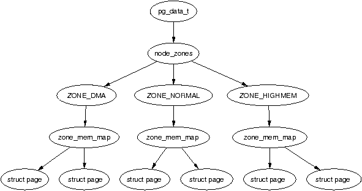
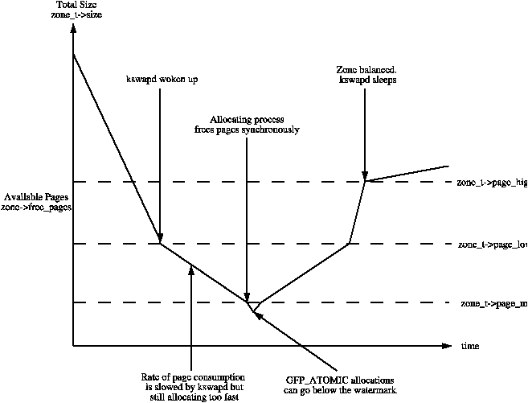
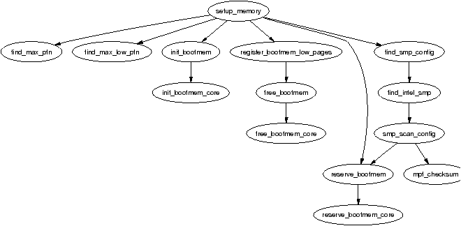
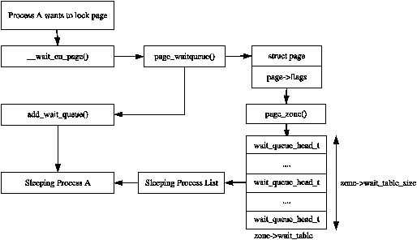
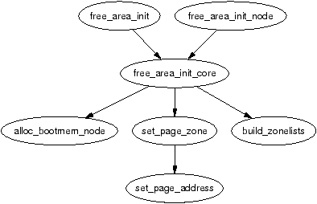

Linux is available for a wide range of architectures so there needs to be an architecture-independent way of describing memory. This chapter describes the structures used to keep account of memory banks, pages and the flags that affect VM behaviour.
The first principal concept prevalent in the VM is Non-Uniform Memory Access (NUMA). With large scale machines, memory may be arranged into banks that incur a different cost to access depending on the “distance” from the processor. For example, there might be a bank of memory assigned to each CPU or a bank of memory very suitable for DMA near device cards.
Each bank is called a node and the concept is represented under Linux by a struct pglist_data even if the architecture is UMA. This struct is always referenced to by it's typedef pg_data_t. Every node in the system is kept on a NULL terminated list called pgdat_list and each node is linked to the next with the field pg_data_t→node_next. For UMA architectures like PC desktops, only one static pg_data_t structure called contig_page_data is used. Nodes will be discussed further in Section 2.1.
Each node is divided up into a number of blocks called zones which represent ranges within memory. Zones should not be confused with zone based allocators as they are unrelated. A zone is described by a struct zone_struct, typedeffed to zone_t and each one is of type ZONE_DMA, ZONE_NORMAL or ZONE_HIGHMEM. Each zone type suitable a different type of usage. ZONE_DMA is memory in the lower physical memory ranges which certain ISA devices require. Memory within ZONE_NORMAL is directly mapped by the kernel into the upper region of the linear address space which is discussed further in Section 4.1. ZONE_HIGHMEM is the remaining available memory in the system and is not directly mapped by the kernel.
| ZONE_DMA | First 16MiB of memory |
| ZONE_NORMAL | 16MiB - 896MiB |
| ZONE_HIGHMEM | 896 MiB - End |
It is important to note that many kernel operations can only take place using ZONE_NORMAL so it is the most performance critical zone. Zones are discussed further in Section 2.2. Each physical page frame is represented by a struct page and all the structs are kept in a global mem_map array which is usually stored at the beginning of ZONE_NORMAL or just after the area reserved for the loaded kernel image in low memory machines. struct pages are discussed in detail in Section 2.4 and the global mem_map array is discussed in detail in Section 3.7. The basic relationship between all these structs is illustrated in Figure 2.1.

Figure 2.1: Relationship Between Nodes, Zones and Pages
As the amount of memory directly accessible by the kernel (ZONE_NORMAL) is limited in size, Linux supports the concept of High Memory which is discussed further in Section 2.5. This chapter will discuss how nodes, zones and pages are represented before introducing high memory management.
As we have mentioned, each node in memory is described by a pg_data_t which is a typedef for a struct pglist_data. When allocating a page, Linux uses a node-local allocation policy to allocate memory from the node closest to the running CPU. As processes tend to run on the same CPU, it is likely the memory from the current node will be used. The struct is declared as follows in <linux/mmzone.h>:
129 typedef struct pglist_data {
130 zone_t node_zones[MAX_NR_ZONES];
131 zonelist_t node_zonelists[GFP_ZONEMASK+1];
132 int nr_zones;
133 struct page *node_mem_map;
134 unsigned long *valid_addr_bitmap;
135 struct bootmem_data *bdata;
136 unsigned long node_start_paddr;
137 unsigned long node_start_mapnr;
138 unsigned long node_size;
139 int node_id;
140 struct pglist_data *node_next;
141 } pg_data_t; We now briefly describe each of these fields:
All nodes in the system are maintained on a list called pgdat_list. The nodes are placed on this list as they are initialised by the init_bootmem_core() function, described later in Section 5.2.1. Up until late 2.4 kernels (> 2.4.18), blocks of code that traversed the list looked something like:
pg_data_t * pgdat;
pgdat = pgdat_list;
do {
/* do something with pgdata_t */
...
} while ((pgdat = pgdat->node_next));
In more recent kernels, a macro for_each_pgdat(), which is trivially defined as a for loop, is provided to improve code readability.
Zones are described by a struct zone_struct and is usually referred to by it's typedef zone_t. It keeps track of information like page usage statistics, free area information and locks. It is declared as follows in <linux/mmzone.h>:
37 typedef struct zone_struct {
41 spinlock_t lock;
42 unsigned long free_pages;
43 unsigned long pages_min, pages_low, pages_high;
44 int need_balance;
45
49 free_area_t free_area[MAX_ORDER];
50
76 wait_queue_head_t * wait_table;
77 unsigned long wait_table_size;
78 unsigned long wait_table_shift;
79
83 struct pglist_data *zone_pgdat;
84 struct page *zone_mem_map;
85 unsigned long zone_start_paddr;
86 unsigned long zone_start_mapnr;
87
91 char *name;
92 unsigned long size;
93 } zone_t;
This is a brief explanation of each field in the struct.
When available memory in the system is low, the pageout daemon kswapd is woken up to start freeing pages (see Chapter 10). If the pressure is high, the process will free up memory synchronously, sometimes referred to as the direct-reclaim path. The parameters affecting pageout behaviour are similar to those by FreeBSD [McK96] and Solaris [MM01].
Each zone has three watermarks called pages_low, pages_min and pages_high which help track how much pressure a zone is under. The relationship between them is illustrated in Figure 2.2. The number of pages for pages_min is calculated in the function free_area_init_core() during memory init and is based on a ratio to the size of the zone in pages. It is calculated initially as ZoneSizeInPages / 128. The lowest value it will be is 20 pages (80K on a x86) and the highest possible value is 255 pages (1MiB on a x86).

Figure 2.2: Zone Watermarks
Whatever the pageout parameters are called in each operating system, the meaning is the same, it helps determine how hard the pageout daemon or processes work to free up pages.

Figure 2.3: Call Graph: setup_memory()
The PFN is an offset, counted in pages, within the physical memory map. The first PFN usable by the system, min_low_pfn is located at the beginning of the first page after _end which is the end of the loaded kernel image. The value is stored as a file scope variable in mm/bootmem.c for use with the boot memory allocator.
How the last page frame in the system, max_pfn, is calculated is quite architecture specific. In the x86 case, the function find_max_pfn() reads through the whole e820 map for the highest page frame. The value is also stored as a file scope variable in mm/bootmem.c. The e820 is a table provided by the BIOS describing what physical memory is available, reserved or non-existent.
The value of max_low_pfn is calculated on the x86 with find_max_low_pfn() and it marks the end of ZONE_NORMAL. This is the physical memory directly accessible by the kernel and is related to the kernel/userspace split in the linear address space marked by PAGE_OFFSET. The value, with the others, is stored in mm/bootmem.c. Note that in low memory machines, the max_pfn will be the same as the max_low_pfn.
With the three variables min_low_pfn, max_low_pfn and max_pfn, it is straightforward to calculate the start and end of high memory and place them as file scope variables in arch/i386/mm/init.c as highstart_pfn and highend_pfn. The values are used later to initialise the high memory pages for the physical page allocator as we will much later in Section 5.5.
When IO is being performed on a page, such are during page-in or page-out, it is locked to prevent accessing it with inconsistent data. Processes wishing to use it have to join a wait queue before it can be accessed by calling wait_on_page(). When the IO is completed, the page will be unlocked with UnlockPage() and any process waiting on the queue will be woken up. Each page could have a wait queue but it would be very expensive in terms of memory to have so many separate queues so instead, the wait queue is stored in the zone_t.
It is possible to have just one wait queue in the zone but that would mean that all processes waiting on any page in a zone would be woken up when one was unlocked. This would cause a serious thundering herd problem. Instead, a hash table of wait queues is stored in zone_t→wait_table. In the event of a hash collision, processes may still be woken unnecessarily but collisions are not expected to occur frequently.

Figure 2.4: Sleeping On a Locked Page
The table is allocated during free_area_init_core(). The size of the table is calculated by wait_table_size() and stored in the zone_t→wait_table_size. The maximum size it will be is 4096 wait queues. For smaller tables, the size of the table is the minimum power of 2 required to store NoPages / PAGES_PER_WAITQUEUE number of queues, where NoPages is the number of pages in the zone and PAGE_PER_WAITQUEUE is defined to be 256. In other words, the size of the table is calculated as the integer component of the following equation:
wait_table_size = log2((NoPages * 2) / PAGES_PER_WAITQUEUE - 1)
The field zone_t→wait_table_shift is calculated as the number of bits a page address must be shifted right to return an index within the table. The function page_waitqueue() is responsible for returning which wait queue to use for a page in a zone. It uses a simple multiplicative hashing algorithm based on the virtual address of the struct page being hashed.
It works by simply multiplying the address by GOLDEN_RATIO_PRIME and shifting the result zone_t→wait_table_shift bits right to index the result within the hash table. GOLDEN_RATIO_PRIME[Lev00] is the largest prime that is closest to the golden ratio[Knu68] of the largest integer that may be represented by the architecture.
The zones are initialised after the kernel page tables have been fully setup by paging_init(). Page table initialisation is covered in Section 3.6. Predictably, each architecture performs this task differently but the objective is always the same, to determine what parameters to send to either free_area_init() for UMA architectures or free_area_init_node() for NUMA. The only parameter required for UMA is zones_size. The full list of parameters:
It is the core function free_area_init_core() which is responsible for filling in each zone_t with the relevant information and the allocation of the mem_map array for the node. Note that information on what pages are free for the zones is not determined at this point. That information is not known until the boot memory allocator is being retired which will be discussed much later in Chapter 5.
The mem_map area is created during system startup in one of two fashions. On NUMA systems, the global mem_map is treated as a virtual array starting at PAGE_OFFSET. free_area_init_node() is called for each active node in the system which allocates the portion of this array for the node being initialised. On UMA systems, free_area_init() is uses contig_page_data as the node and the global mem_map as the “local” mem_map for this node. The callgraph for both functions is shown in Figure 2.5.

Figure 2.5: Call Graph: free_area_init()
The core function free_area_init_core() allocates a local lmem_map for the node being initialised. The memory for the array is allocated from the boot memory allocator with alloc_bootmem_node() (see Chapter 5). With UMA architectures, this newly allocated memory becomes the global mem_map but it is slightly different for NUMA.
NUMA architectures allocate the memory for lmem_map within their own memory node. The global mem_map never gets explicitly allocated but instead is set to PAGE_OFFSET where it is treated as a virtual array. The address of the local map is stored in pg_data_t→node_mem_map which exists somewhere within the virtual mem_map. For each zone that exists in the node, the address within the virtual mem_map for the zone is stored in zone_t→zone_mem_map. All the rest of the code then treats mem_map as a real array as only valid regions within it will be used by nodes.
Every physical page frame in the system has an associated struct page which is used to keep track of its status. In the 2.2 kernel [BC00], this structure resembled it's equivalent in System V [GC94] but like the other UNIX variants, the structure changed considerably. It is declared as follows in <linux/mm.h>:
152 typedef struct page {
153 struct list_head list;
154 struct address_space *mapping;
155 unsigned long index;
156 struct page *next_hash;
158 atomic_t count;
159 unsigned long flags;
161 struct list_head lru;
163 struct page **pprev_hash;
164 struct buffer_head * buffers;
175
176 #if defined(CONFIG_HIGHMEM) || defined(WANT_PAGE_VIRTUAL)
177 void *virtual;
179 #endif /* CONFIG_HIGMEM || WANT_PAGE_VIRTUAL */
180 } mem_map_t;
Here is a brief description of each of the fields:
The type mem_map_t is a typedef for struct page so it can be easily referred to within the mem_map array.
Bit name Description PG_active This bit is set if a page is on the active_list LRU and cleared when it is removed. It marks a page as being hot PG_arch_1 Quoting directly from the code: PG_arch_1 is an architecture specific page state bit. The generic code guarantees that this bit is cleared for a page when it first is entered into the page cache. This allows an architecture to defer the flushing of the D-Cache (See Section 3.9) until the page is mapped by a process PG_checked Only used by the Ext2 filesystem PG_dirty This indicates if a page needs to be flushed to disk. When a page is written to that is backed by disk, it is not flushed immediately, this bit is needed to ensure a dirty page is not freed before it is written out PG_error If an error occurs during disk I/O, this bit is set PG_fs_1 Bit reserved for a filesystem to use for it's own purposes. Currently, only NFS uses it to indicate if a page is in sync with the remote server or not PG_highmem Pages in high memory cannot be mapped permanently by the kernel. Pages that are in high memory are flagged with this bit during mem_init() PG_launder This bit is important only to the page replacement policy. When the VM wants to swap out a page, it will set this bit and call the writepage() function. When scanning, if it encounters a page with this bit and PG_locked set, it will wait for the I/O to complete PG_locked This bit is set when the page must be locked in memory for disk I/O. When I/O starts, this bit is set and released when it completes PG_lru If a page is on either the active_list or the inactive_list, this bit will be set PG_referenced If a page is mapped and it is referenced through the mapping, index hash table, this bit is set. It is used during page replacement for moving the page around the LRU lists PG_reserved This is set for pages that can never be swapped out. It is set by the boot memory allocator (See Chapter 5) for pages allocated during system startup. Later it is used to flag empty pages or ones that do not even exist PG_slab This will flag a page as being used by the slab allocator PG_skip Used by some architectures to skip over parts of the address space with no backing physical memory PG_unused This bit is literally unused PG_uptodate When a page is read from disk without error, this bit will be set.
Table 2.1: Flags Describing Page Status
Table 2.2: Macros For Testing, Setting and Clearing page→flags Status Bits
Up until as recently as kernel 2.4.18, a struct page stored a reference to its zone with page→zone which was later considered wasteful, as even such a small pointer consumes a lot of memory when thousands of struct pages exist. In more recent kernels, the zone field has been removed and instead the top ZONE_SHIFT (8 in the x86) bits of the page→flags are used to determine the zone a page belongs to. First a zone_table of zones is set up. It is declared in mm/page_alloc.c as:
33 zone_t *zone_table[MAX_NR_ZONES*MAX_NR_NODES]; 34 EXPORT_SYMBOL(zone_table);
MAX_NR_ZONES is the maximum number of zones that can be in a node, i.e. 3. MAX_NR_NODES is the maximum number of nodes that may exist. The function EXPORT_SYMBOL() makes zone_table accessible to loadable modules. This table is treated like a multi-dimensional array. During free_area_init_core(), all the pages in a node are initialised. First it sets the value for the table
733 zone_table[nid * MAX_NR_ZONES + j] = zone;
Where nid is the node ID, j is the zone index and zone is the zone_t struct. For each page, the function set_page_zone() is called as
788 set_page_zone(page, nid * MAX_NR_ZONES + j);
The parameter, page, is the page whose zone is being set. So, clearly the index in the zone_table is stored in the page.
As the addresses space usable by the kernel (ZONE_NORMAL) is limited in size, the kernel has support for the concept of High Memory. Two thresholds of high memory exist on 32-bit x86 systems, one at 4GiB and a second at 64GiB. The 4GiB limit is related to the amount of memory that may be addressed by a 32-bit physical address. To access memory between the range of 1GiB and 4GiB, the kernel temporarily maps pages from high memory into ZONE_NORMAL with kmap(). This is discussed further in Chapter 9.
The second limit at 64GiB is related to Physical Address Extension (PAE) which is an Intel invention to allow more RAM to be used with 32 bit systems. It makes 4 extra bits available for the addressing of memory, allowing up to 236 bytes (64GiB) of memory to be addressed.
PAE allows a processor to address up to 64GiB in theory but, in practice, processes in Linux still cannot access that much RAM as the virtual address space is still only 4GiB. This has led to some disappointment from users who have tried to malloc() all their RAM with one process.
Secondly, PAE does not allow the kernel itself to have this much RAM available. The struct page used to describe each page frame still requires 44 bytes and this uses kernel virtual address space in ZONE_NORMAL. That means that to describe 1GiB of memory, approximately 11MiB of kernel memory is required. Thus, with 16GiB, 176MiB of memory is consumed, putting significant pressure on ZONE_NORMAL. This does not sound too bad until other structures are taken into account which use ZONE_NORMAL. Even very small structures such as Page Table Entries (PTEs) require about 16MiB in the worst case. This makes 16GiB about the practical limit for available physical memory Linux on an x86. If more memory needs to be accessed, the advice given is simple and straightforward, buy a 64 bit machine.
At first glance, there has not been many changes made to how memory is described but the seemingly minor changes are wide reaching. The node descriptor pg_data_t has a few new fields which are as follows:
The node_size field has been removed and replaced instead with two fields. The change was introduced to recognise the fact that nodes may have “holes” in them where there is no physical memory backing the address.
Even at first glance, zones look very different. They are no longer called zone_t but instead referred to as simply struct zone. The second major difference is the LRU lists. As we'll see in Chapter 10, kernel 2.4 has a global list of pages that determine the order pages are freed or paged out. These lists are now stored in the struct zone. The relevant fields are:
Three other fields are new but they are related to the dimensions of the zone. They are:
The next addition is struct per_cpu_pageset which is used to maintain lists of pages for each CPU to reduce spinlock contention. The zone→pageset field is a NR_CPU sized array of struct per_cpu_pageset where NR_CPU is the compiled upper limit of number of CPUs in the system. The per-cpu struct is discussed further at the end of the section.
The last addition to struct zone is the inclusion of padding of zeros in the struct. Development of the 2.6 VM recognised that some spinlocks are very heavily contended and are frequently acquired. As it is known that some locks are almost always acquired in pairs, an effort should be made to ensure they use different cache lines which is a common cache programming trick [Sea00]. These padding in the struct zone are marked with the ZONE_PADDING() macro and are used to ensure the zone→lock, zone→lru_lock and zone→pageset fields use different cache lines.
The first noticeable change is that the ordering of fields has been changed so that related items are likely to be in the same cache line. The fields are essentially the same except for two additions. The first is a new union used to create a PTE chain. PTE chains are are related to page table management so will be discussed at the end of Chapter 3. The second addition is of page→private field which contains private information specific to the mapping. For example, the field is used to store a pointer to a buffer_head if the page is a buffer page. This means that the page→buffers field has also been removed. The last important change is that page→virtual is no longer necessary for high memory support and will only exist if the architecture specifically requests it. How high memory pages are supported is discussed further in Chapter 9.
In 2.4, only one subsystem actively tries to maintain per-cpu lists for any object and that is the Slab Allocator, discussed in Chapter 8. In 2.6, the concept is much more wide-spread and there is a formalised concept of hot and cold pages.
The struct per_cpu_pageset, declared in <linux/mmzone.h> has one one field which is an array with two elements of type per_cpu_pages. The zeroth element of this array is for hot pages and the first element is for cold pages where hot and cold determines how “active” the page is currently in the cache. When it is known for a fact that the pages are not to be referenced soon, such as with IO readahead, they will be allocated as cold pages.
The struct per_cpu_pages maintains a count of the number of pages currently in the list, a high and low watermark which determine when the set should be refilled or pages freed in bulk, a variable which determines how many pages should be allocated in one block and finally, the actual list head of pages.
To build upon the per-cpu page lists, there is also a per-cpu page accounting mechanism. There is a struct page_state that holds a number of accounting variables such as the pgalloc field which tracks the number of pages allocated to this CPU and pswpin which tracks the number of swap readins. The struct is heavily commented in <linux/page-flags.h>. A single function mod_page_state() is provided for updating fields in the page_state for the running CPU and three helper macros are provided called inc_page_state(), dec_page_state() and sub_page_state().